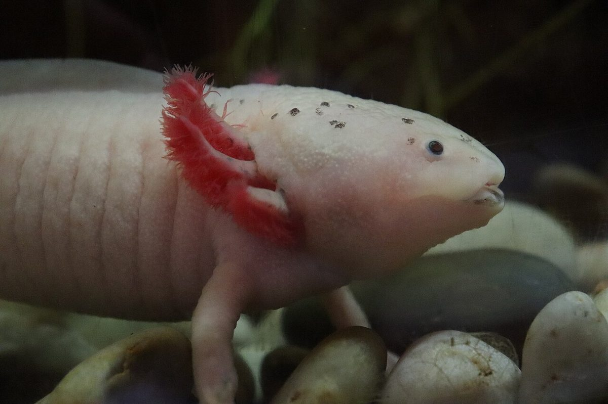

It keeps its baby gills its whole life, can regrow a lost limb, and barely seems to age. Meet the axolotl — nature's perpetual kid.
Some animals grow up. Tadpoles become frogs. Caterpillars become butterflies. And then there is the axolotl (say: ACK-suh-LAH-tul), a pink salamander from Mexico that simply... does not. It stays looking like a baby its entire life, and it turns out that is only the beginning of what makes it extraordinary.
Here are seven facts about one of the strangest and toughest animals on Earth.
1. It never really grows up
Most amphibians go through a dramatic change called metamorphosis: a tadpole loses its tail, grows legs, and hops onto land as an adult. The axolotl skips all of that. It keeps its juvenile features for life, a phenomenon called neoteny (say: nee-oh-TEE-nee).
It keeps a flat, tadpole-like fin down its back, a tail, webbed feet, and — most famously — a set of feathery external gills that fan out from the sides of its head like a mane. Adult axolotls just get bigger and bigger, like amphibious Peter Pans.
2. It lives in exactly one place on Earth
In the wild, axolotls are found in only one spot: the lake complex of Xochimilco (say: so-chee-MILL-koh), a network of canals, small lakes and wetlands just outside Mexico City. They spend their whole lives in the water.
Because that one home is shrinking and its waterways are under pressure, wild axolotls are critically endangered. Almost all the axolotls people keep as pets are ones bred by humans, not plucked from the wild.

3. It can regrow body parts
This is the axolotl's superpower. It can regenerate lost or damaged limbs, and that is not even the impressive part — it can also regrow parts of its heart, its spinal cord, and even parts of its brain, all without leaving scars. A lost limb can grow back in roughly a month.
That is why axolotls are one of the most-studied animals in biology. Scientists hope that by understanding how an axolotl rebuilds its own body, they may one day help human bodies heal better too.
4. It breathes three different ways
Those showy feathery gills are not just for looks — the axolotl breathes through them underwater. But it keeps its options open: adults also have working lungs, and they can absorb oxygen straight through their skin. One animal, three ways to breathe.
5. It barely ages
Here is a finding that made headlines. In a study of axolotl aging, scientists found that the animals seem to hit pause on their body's "aging clock." Researchers could build a reliable clock of age for roughly the first four years of an axolotl's life — and after that, the chemical markers just stopped changing, as if the animal's development had gently frozen.
Axolotls can live for around 21 years, and even their regrown limbs come back "younger" than the rest of the body. Some scientists are studying them to see whether their secret could teach us anything about slowing aging in humans.
6. It has a giant instruction manual
Every living thing carries DNA, the set of instructions for building a body. The axolotl's genome is famously enormous — it is the second-longest genome of any animal, with about 32 billion base pairs, roughly ten times the size of the human genome.
Researchers have been unpicking that huge instruction book to understand how the axolotl knows exactly how to rebuild an arm in exactly the right spot. A 2025 study found that a particular enzyme and gene, working together with a chemical called retinoic acid, help guide the regrowth.
7. Its famous smile hides a fascinating face
Axolotls are famous for looking like they are smiling, a result of the shape of their mouth and their calm, curious nature. That gentle face, plus their astonishing healing powers, has made them a symbol of both scientific wonder and the fragility of wild places.
An animal that never grows up, lives in a single lake, and can rebuild its own body? The axolotl is a reminder that some of nature's best tricks are still waiting to be understood.
Sources: National Geographic — Axolotl · National Geographic — How axolotls' secret to pausing aging could change medicine